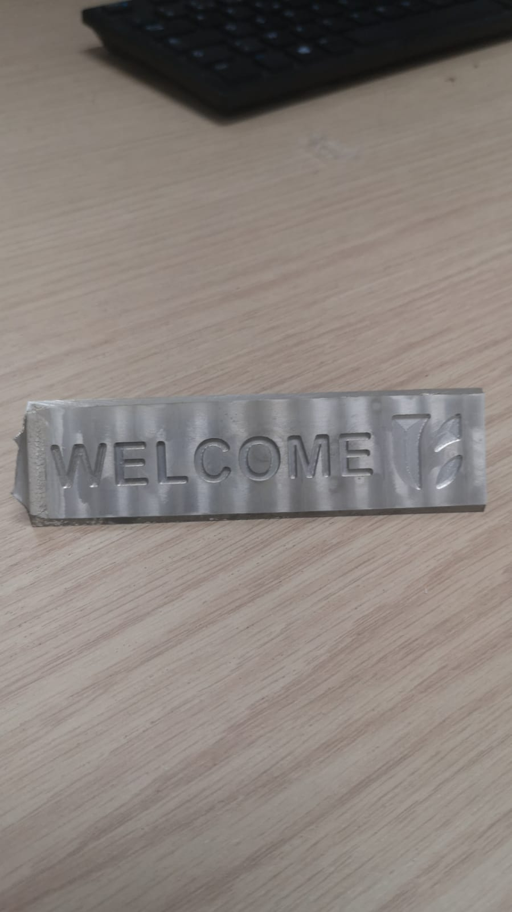
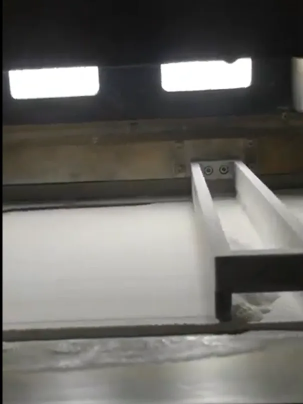

UEMF · Advanced Manufacturing Lab
Powder Flowability Test Bench
Industrial experience
The project
I designed and fabricated a powder-flowability test bench during my manufacturing-lab internship, using ASTM B213 as a reference.
The challenge
The assignment brought together apparatus design, machining and additive prototyping in one physical bench.
My contribution
The work behind it
- 01
I developed the CAD in CATIA V5, working through the component geometry and assembly interfaces.
- 02
I prepared CAM in Fusion 360 and used the Haas VF-2, a three-axis CNC mill, to machine components.
- 03
FDM and SLS prototyping supported the fabrication work, taking the assignment beyond the CAD model.
A closer look
Related laboratory work


Outcome
What came out of it
A fabricated test bench supported by CAD/CAM work. The project was designed with reference to ASTM B213; it is not presented as independently certified.
Methods & tools
- CATIA V5
- Fusion 360 CAM
- Haas VF-2
- FDM & SLS